#' # Exemplo (Barbin, 1994)
#' Um pesquisador pretende comparar quatro variedades de pêssego quanto ao enraizamento de estacas. Para tanto, realizou um experimento de acordo com o delineamento inteiramente casualizado com cinco repetições, sendo cada parcela um vaso com vinte estacas. Passado o tempo necessário, o pesquisador anotou o número de estacas enraizadas.
library(xlsx)
#dados <- read.xlsx(file.choose(), 1)
dados <- read.xlsx("estacas.xlsx", 1)
str(dados)## 'data.frame': 20 obs. of 2 variables:
## $ trat: chr "A" "A" "A" "A" ...
## $ y : num 2 2 1 1 0 1 0 0 1 1 ...library(ggplot2)## Warning: package 'ggplot2' was built under R version 4.3.3ggplot(dados,
aes(x = trat,
y = y)) +
geom_point(position = position_jitter(w = 0.2, h = 0)) +
theme_bw() +
ylab("Resíduos estudentizados") +
xlab("Variedade")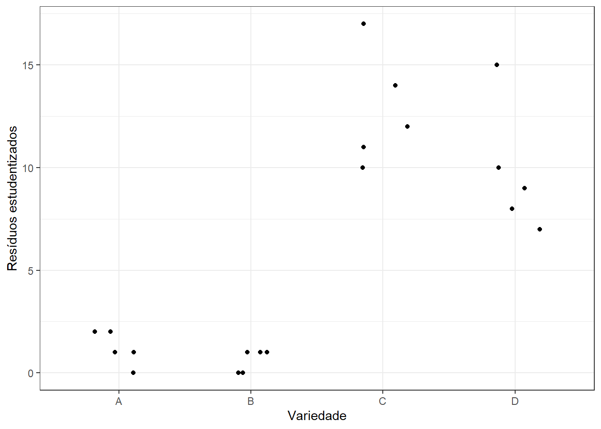
#' ## Análise de variância - ajuste do modelo
modelo <- lm(y ~ trat, dados)
#' ## Obtenção dos resíduos
(res <- residuals(modelo)) # resíduos simples## 1 2 3 4 5 6 7 8 9 10 11 12 13 14 15 16
## 0.8 0.8 -0.2 -0.2 -1.2 0.4 -0.6 -0.6 0.4 0.4 -0.8 -2.8 1.2 4.2 -1.8 -2.8
## 17 18 19 20
## -0.8 5.2 -1.8 0.2(res_Stud <- rstandard(modelo)) # resíduos estudentizados## 1 2 3 4 5 6 7
## 0.4170288 0.4170288 -0.1042572 -0.1042572 -0.6255432 0.2085144 -0.3127716
## 8 9 10 11 12 13 14
## -0.3127716 0.2085144 0.2085144 -0.4170288 -1.4596009 0.6255432 2.1894013
## 15 16 17 18 19 20
## -0.9383149 -1.4596009 -0.4170288 2.7106874 -0.9383149 0.1042572#' - Observações discrepantes
boxplot(res_Stud)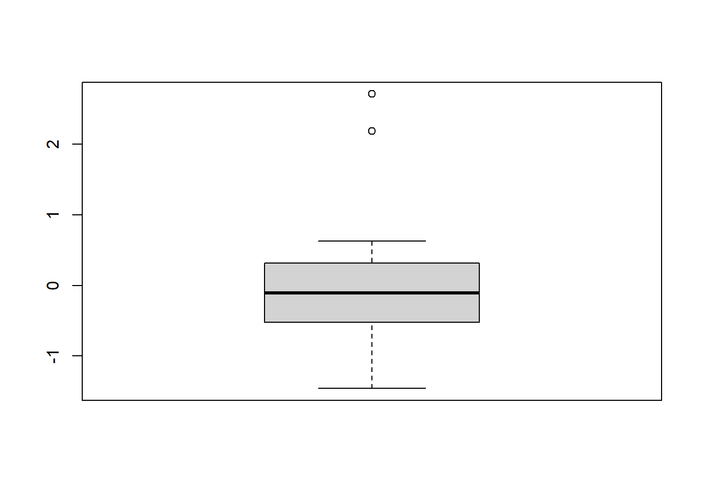
#' São observados dois valores discrepantes para os resíduos, quando esperada a normalidade dos erros. Logo, não se observa 95\% dos resíduos entre -2 e 2, entretanto 100\% destes estão entre -3 e 3.
ggplot(dados,
aes(x = trat,
y = res_Stud)) +
geom_point(position = position_jitter(w = 0.3, h = 0)) +
theme_bw() +
ylab("Resíduos estudentizados") +
xlab("Variedade")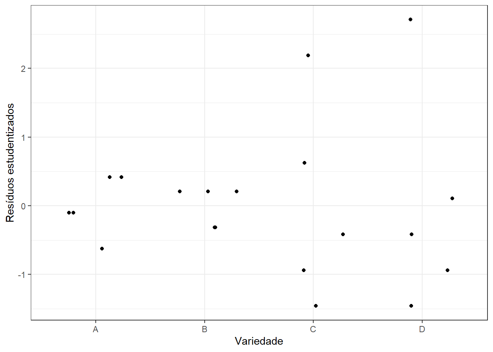
#' Observa-se que os dois valores discrepantes estão relacionados às variedades C e D. A dispersão dos resíduos por tratamento será discutida posteriormente.
#'
#' ## Homogeneidade de Variâncias
#'
ggplot(dados,
aes(x = trat,
y = res_Stud)) +
geom_point() +
theme_bw() +
ylab("Resíduos Estudentizados") +
xlab("Variedade")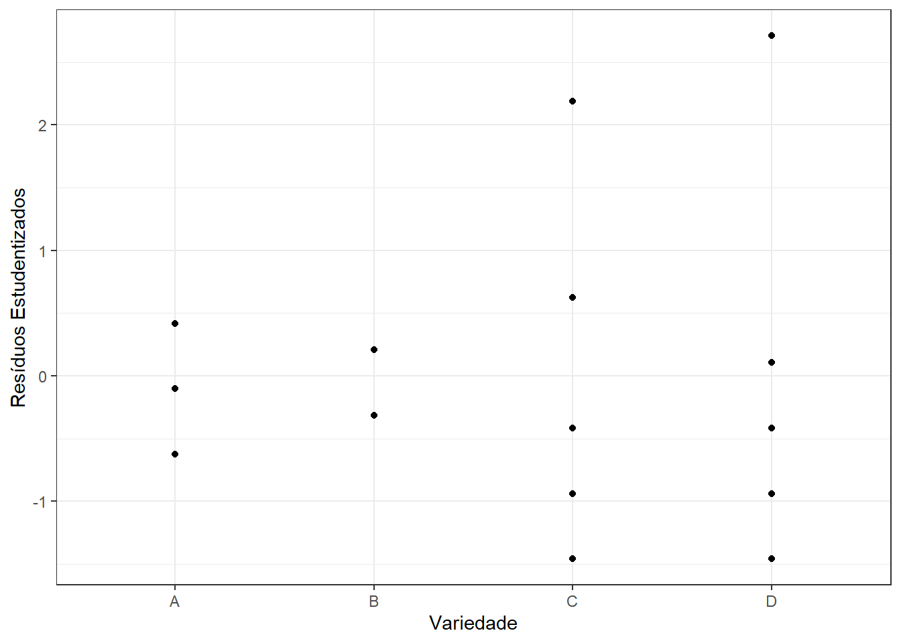
#' Observa-se que as dispersões dos resíduos estudentizados associados às variedades A e B são menores do que as dispersões dos resíduos estudentizados associados às variedades C e D, aparentemente.
#'
#' - Teste de hipóteses: Teste de Levene (1960)
#' $$\begin{array}{l}
#' H_0: \mbox{Há homogeneidade de variâncias}\\
#' H_a: \mbox{Não há homogeneidade de variâncias}
#' \end{array}$$
library(lawstat)
levene.test(res_Stud, dados$trat, location = "mean")##
## Classical Levene's test based on the absolute deviations from the mean
## ( none not applied because the location is not set to median )
##
## data: res_Stud
## Test Statistic = 2.8895, p-value = 0.06786#' Como o valor-p = 0,06786 > 0,05 = $\alpha$, considerando-se o nível de 5\% de significância não rejeitamos $H_0$. Logo, não há evidências para afirmarmos que as variâncias não são homogêneas.
#' ## Normalidade dos Erros
qqnorm(res_Stud)
qqline(res_Stud, col=2)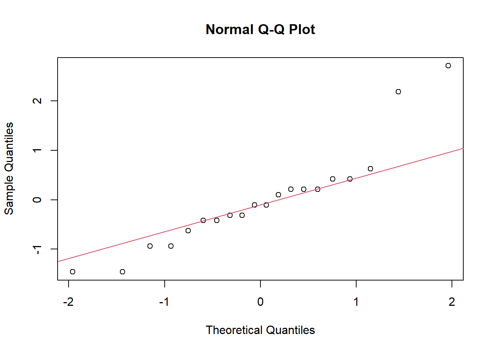
#' Observa-se o afastamento de dois pontos da reta que passa pelos pontos ($Q_{1_{esp}}$, $Q_{1_{obs}}$) e ($Q_{3_{esp}}$, $Q_{3_{obs}}$). Desse modo, espera-se que os erros não sigam uma distribuição normal.
library(hnp)## Carregando pacotes exigidos: MASShnp(modelo,
print.on = TRUE)## Gaussian model (lm object)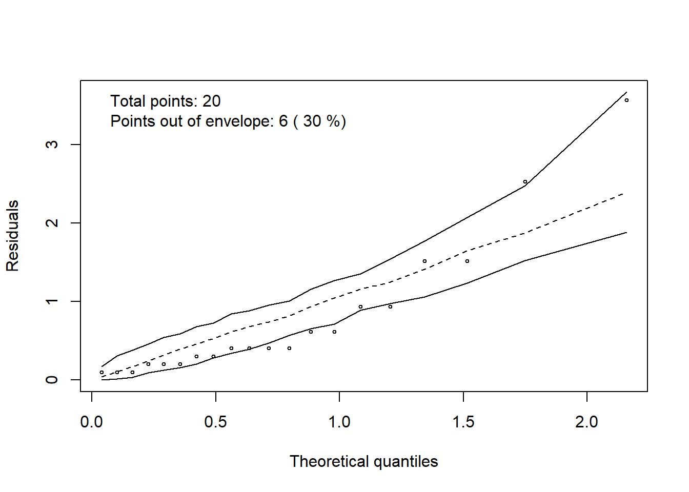
#' É aceitável que pelo menos 95\% dos pontos pertençam ao intervalo de confiança gerado. Para o exemplo, tem-se mais de 5\% destes foram do intervalo. Assim, é esperado que os erros não sigam uma distribuição normal.
#'
#' - Teste de hipóteses: Shapiro-Wilk (1965)
#'
#' $$\begin{array}{l}
#' H_0: \mbox{Os erros seguem uma distribuição normal}\\
#' H_a: \mbox{Os erros não seguem uma distribuição normal}
#' \end{array}$$
shapiro.test(res_Stud)##
## Shapiro-Wilk normality test
##
## data: res_Stud
## W = 0.88533, p-value = 0.02209#' Como o valor-p = 0,02209 < 0,05 = $\alpha$, considerando-se o nível de 5\% de significância, rejeitamos $H_0$. Logo, há evidências para afirmarmos que os erros não seguem uma distribuição normal.
#' ## Transformação de dados
ggplot(,
aes(x = fitted(modelo),
y = res_Stud)) +
geom_point() +
theme_bw() +
geom_hline(yintercept = 0) +
ylab("Resíduos estudentizados") +
xlab("Valores esperados (médias)")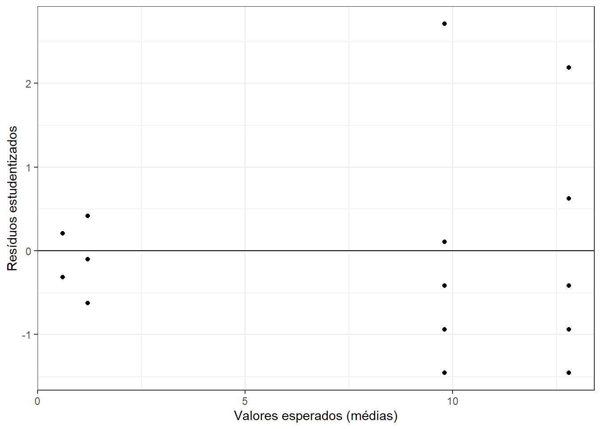
#' Observa-se o aumento da dispersão conforme os valores preditos aumentam. Assim, é esperado que uma transformação da família Box-Cox seja necessária.
#' Soma-se uma constante, 0,5, pois há valores observados nulos.
library(MASS)
boxcox(dados$y+0.5 ~ dados$trat,
ylab="logaritmo da verossimilhança") #lambda=0,5.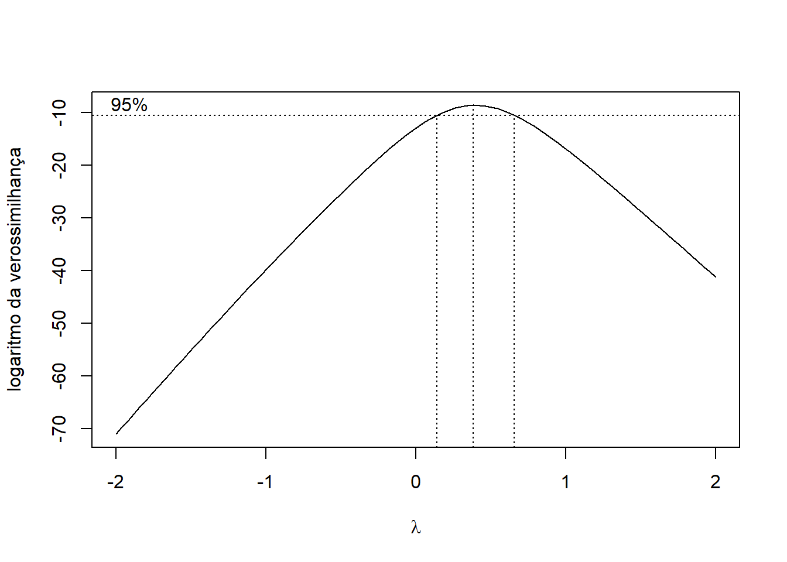
#' Observe que o valor 1 não pertence ao intervalo de confiança a 95\% para $\lambda$, porém, o valor 0,5 pertence, sendo este o valor indicado de $\lambda$.
#'
#' # Análise dos Dados Transformados
#'
dados$yt <- (dados$y+0.5)^0.5
modelot <- lm(yt ~ trat, dados)
#'
#' ## Normalidade dos Erros
#'
qqnorm(rstandard(modelot), xlab="Quantis da distribuição
normal", ylab="Resíduos estudentizados")
qqline(rstandard(modelot), col=2)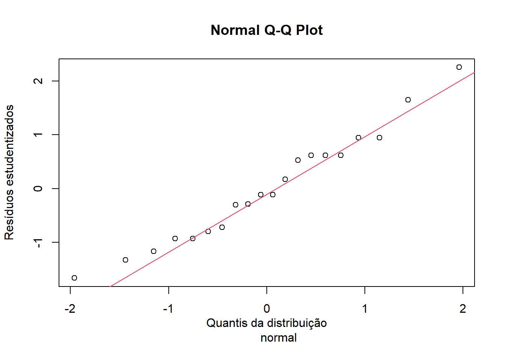
#' Com os dados transformados e novo modelo ajustado, tem-se que 95\% dos resíduos encontram-se entre -2 e 2 e, os pontos não apresentam grande afastamento da reta, o que indica possível normalidade dos erros.
hnp(modelot, print.on = TRUE)## Gaussian model (lm object)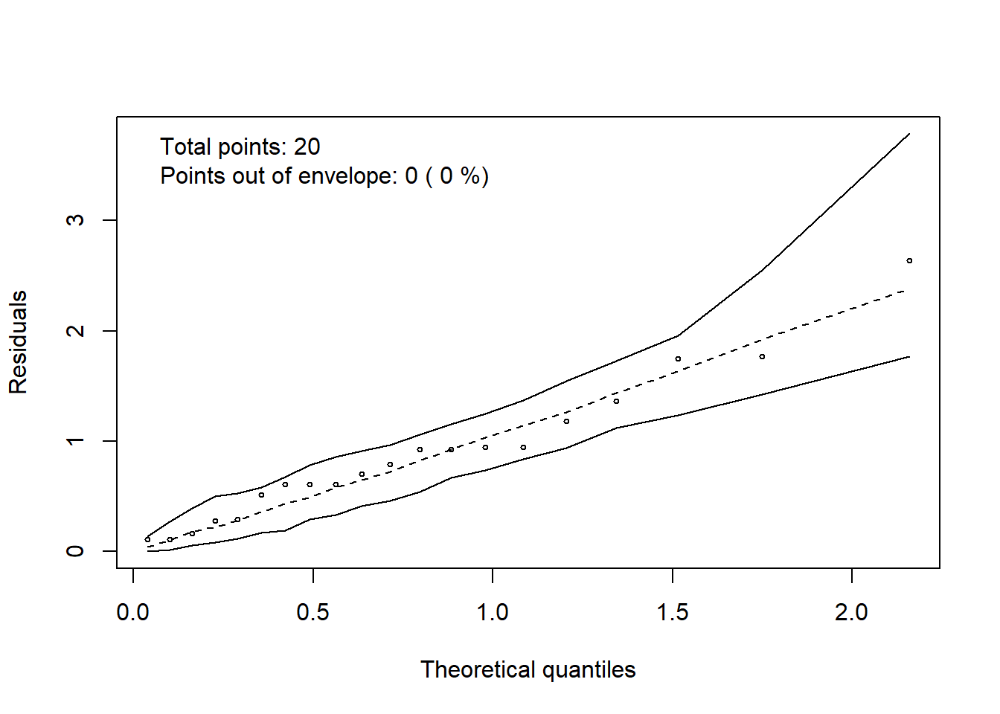
#' Com os dados transformados e novo modelo ajustado, tem-se que todos os pontos pertencem ao envelope simulado, indicando possível normalidade dos erros.
#' $$\begin{array}{l}
#' H_0: \mbox{Os erros seguem uma distribuição normal}\\
#' H_a: \mbox{Os erros não seguem uma distribuição normal}
#' \end{array}$$
shapiro.test(rstandard(modelot))##
## Shapiro-Wilk normality test
##
## data: rstandard(modelot)
## W = 0.97048, p-value = 0.765#' Como o valor-p = 0,8943 > 0,05 = $\alpha$, considerando-se o nível de 5\% de significância, não rejeitamos $H_0$. Logo, há evidências para afirmarmos que os erros seguem uma distribuição normal.
#'
#' ## Homogeneidade de variâncias
#'
ggplot(dados,
aes(x = trat,
y = rstandard(modelot))) +
geom_point(position = position_jitter(w = 0.3, h = 0)) +
geom_hline(yintercept = 0) +
theme_bw() +
ylab("Resíduos estudentizados") +
xlab("Variedade")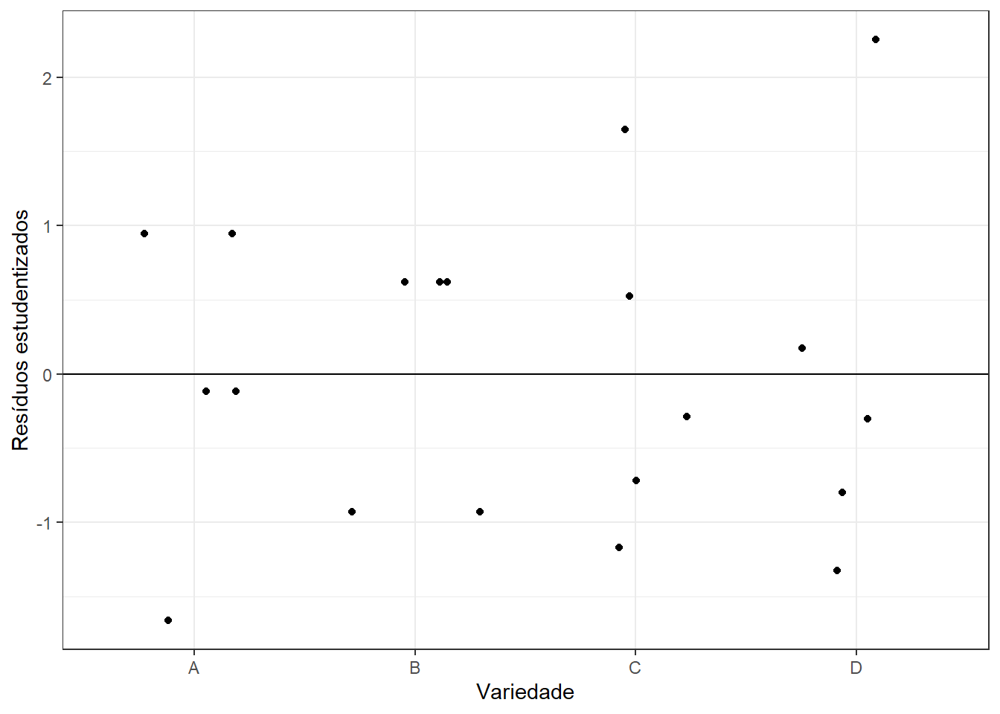
#' Aparentemente, as dispersões dos resíduos por tratamento são semelhantes.
#' $$\begin{array}{l}
#' H_0: \mbox{Há homogeneidade de variâncias}\\
#' H_a: \mbox{Não há homogeneidade de variâncias}
#' \end{array}$$
levene.test(rstandard(modelot), dados$trat, location = "mean")##
## Classical Levene's test based on the absolute deviations from the mean
## ( none not applied because the location is not set to median )
##
## data: rstandard(modelot)
## Test Statistic = 0.15361, p-value = 0.9258#' Como o valor-p = 0,9258 > 0,05 = $\alpha$, considerando-se o nível de 5\% de significância, não rejeitamos $H_0$. Logo, há evidências para afirmarmos que há homogeneidade de variâncias dos erros.
#'
#' ## Transformação de Dados
#'
ggplot(dados,
aes(x = fitted(modelot),
y = rstandard(modelot))) +
geom_point() +
geom_hline(yintercept = 0) +
theme_bw() +
ylab("Resíduos Estudentizados") +
xlab("Valores esperados (médias)")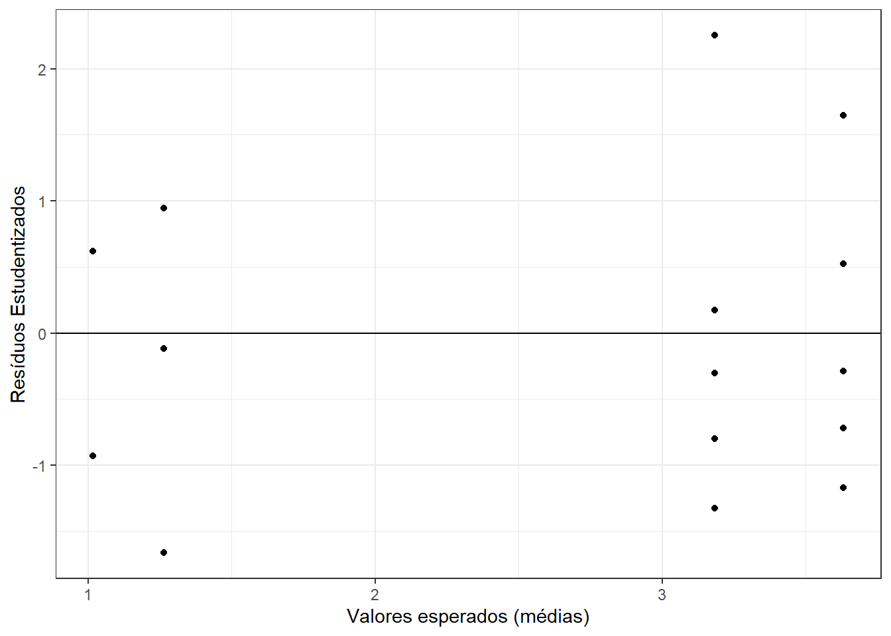
#' Agora, aparentemente, há um leve aumento na dispersão dos resíduos conforme o valor predito aumenta.
boxcox(modelot, ylab="logaritmo da verossimilhança")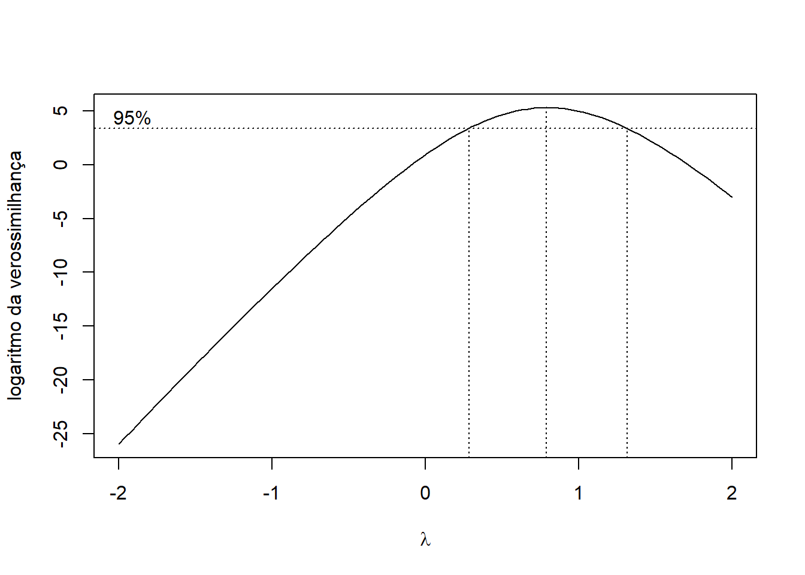
#' Quando utilizados os dados transformados, verifica-se que o valor 1 pertence ao intervalo de confiança para $\lambda$. Desse modo, nova transformação não é indicada.
#'
#' ## Análise de Variância
#'
#' Atendidas as pressuposiões para a realização da análise de variância, considerando-se os dados transformados, temos:
#'
#' Hipóteses:
#' $$\begin{array}{l}
#' H_0: \mu_A = \mu_B = \mu_C = \mu_D = \mu\\
#' H_a: \mbox{Pelo menos um constraste de médias difere de zero}
#' \end{array}$$
anova(modelot)## Analysis of Variance Table
##
## Response: yt
## Df Sum Sq Mean Sq F value Pr(>F)
## trat 3 26.3394 8.7798 62.644 4.623e-09 ***
## Residuals 16 2.2425 0.1402
## ---
## Signif. codes: 0 '***' 0.001 '**' 0.01 '*' 0.05 '.' 0.1 ' ' 1#' Como o valor-p = $4,623\times10^{-9} < 0,05 = \alpha$, considerando o nível de 5\% de significância, rejeitamos $H_0$. Desse modo, há evidências para afirmarmos que pelo menos um contraste de médias difere de zero.
#'
#' ## Teste de Tukey
#'
#' Hipóteses:
#' $$\begin{array}{l}
#' H_0: \mu_i = \mu_{i'}, \text{ para } i \neq i'\\
#' H_a: \mu_i \neq \mu_{i'}, \text{ para } i \neq i'\\
#' \end{array}$$
library(ExpDes.pt)##
## Attaching package: 'ExpDes.pt'## The following object is masked from 'package:MASS':
##
## ginvwith(dados,
dic(trat,
yt))## ------------------------------------------------------------------------
## Quadro da analise de variancia
## ------------------------------------------------------------------------
## GL SQ QM Fc Pr>Fc
## Tratamento 3 26.3394 8.7798 62.644 4.6231e-09
## Residuo 16 2.2425 0.1402
## Total 19 28.5819
## ------------------------------------------------------------------------
## CV = 16.46 %
##
## ------------------------------------------------------------------------
## Teste de normalidade dos residuos ( Shapiro-Wilk )
## Valor-p: 0.7649626
## De acordo com o teste de Shapiro-Wilk a 5% de significancia, os residuos podem ser considerados normais.
## ------------------------------------------------------------------------
##
## ------------------------------------------------------------------------
## Teste de homogeneidade de variancia
## valor-p: 0.838274
## De acordo com o teste de bartlett a 5% de significancia, as variancias podem ser consideradas homogeneas.
## ------------------------------------------------------------------------
##
## Teste de Tukey
## ------------------------------------------------------------------------
## Grupos Tratamentos Medias
## a C 3.631651
## a D 3.182734
## b A 1.263775
## b B 1.01769
## ------------------------------------------------------------------------#' A partir do teste de Tukey, ao nível de 5\% de significância, há evidências para afirmarmos que as médias para as variedades C e D diferem das médias paras as variedades A e B, e as demais médias não diferem entre si.
#'
#' ## Médias obtidas pela transformação inversa
#'
(medias.TI <- round((tapply(dados$yt, dados$trat, mean))^2-0.5,4) )## A B C D
## 1.0971 0.5357 12.6889 9.6298#'
#' ## Apresentação das médias
#'
mediasTI <- data.frame(trat = LETTERS[1:4],
media = c(medias.TI),
tukey = c("b", "b", "a", "a"))
# atenção a ordem dos tratamentos na saída da ExpDes.pt
mediasTI <- mediasTI[order(mediasTI$trat),]
mediasTI## trat media tukey
## A A 1.0971 b
## B B 0.5357 b
## C C 12.6889 a
## D D 9.6298 aggplot(mediasTI,
aes(x = trat,
y = media,
label = tukey)) +
geom_bar(stat = "identity") +
geom_text(aes(x = trat,
y = media + 0.5)) +
theme_bw() +
xlab("Variedade") +
ylab("número de estacas enraizadas
(médias obtidas pela transformação inversa)")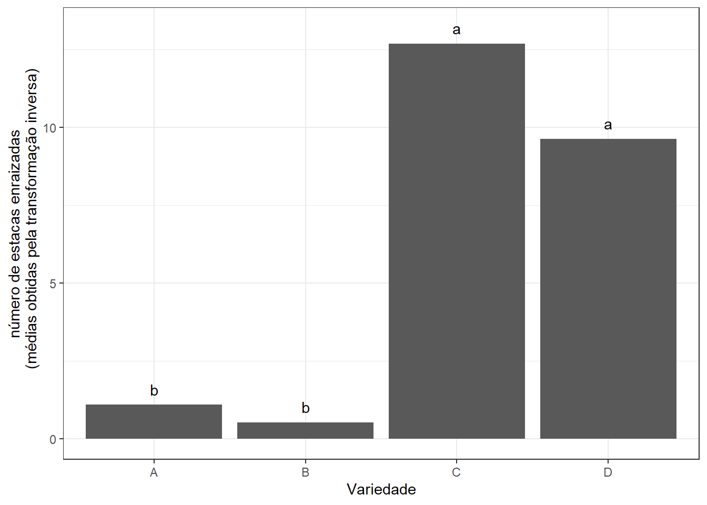